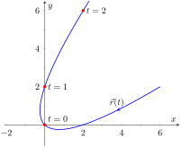
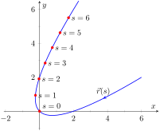
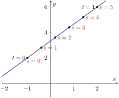
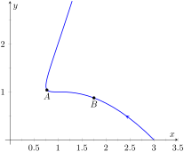
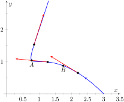
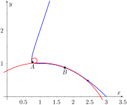

In normal conversation we describe position in terms of both time and distance. For instance, imagine driving to visit a friend. If she calls and asks where you are, you might answer “I am 20 minutes from your house,” or you might say “I am 10 miles from your house.” Both answers provide your friend with a general idea of where you are.
Currently, our vector-valued functions have defined points with a parameter \(t\text{,}\) which we often take to represent time. Consider Figure 12.5.2.(a), where \(\vrt = \la t^2-t,t^2+t\ra\) is graphed and the points corresponding to \(t=0,\ 1\) and \(2\) are shown. Note how the arc length between \(t=0\) and \(t=1\) is smaller than the arc length between \(t=1\) and \(t=2\text{;}\) if the parameter \(t\) is time and \(\vec r\) is position, we can say that the particle traveled faster on \([1,2]\) than on \([0,1]\text{.}\)
(a)
(b)
Figure12.5.2.Introducing the arc length parameter
Now consider Figure 12.5.2.(b), where the same graph is parametrized by a different variable \(s\text{.}\) Points corresponding to \(s=0\) through \(s=6\) are plotted. The arc length of the graph between each adjacent pair of points is 1. We can view this parameter \(s\) as distance; that is, the arc length of the graph from \(s=0\) to \(s=3\) is 3, the arc length from \(s=2\) to \(s=6\) is 4, etc. If one wants to find the point 2.5 units from an initial location (i.e., \(s=0\)), one would compute \(\vec r(2.5)\text{.}\) This parameter \(s\) is very useful, and is called the arc length parameter.
How do we find the arc length parameter?
Start with any parametrization of \(\vec r\text{.}\) We can compute the arc length of the graph of \(\vec r\) on the interval \([0,t]\) with
This establishes a relationship between \(s\) and \(t\text{.}\) Knowing this relationship explicitly, we can rewrite \(\vrt\) as a function of \(s\text{:}\)\(\vec r(s)\text{.}\) We demonstrate this in an example.
Example12.5.3.Finding the arc length parameter.
Let \(\vrt = \la 3t-1,4t+2\ra\text{.}\) Parametrize \(\vec r\) with the arc length parameter \(s\text{.}\)
Clearly, as shown in Figure 12.5.4, the graph of \(\vec r\) is a line, where \(t=0\) corresponds to the point \((-1,2)\text{.}\) What point on the line is 2 units away from this initial point? We find it with \(\vec r(2) = \la 1/5, 18/5\ra\text{.}\)

Figure12.5.4.Graphing \(\vec r\) in Example 12.5.3 with parameters \(t\) and \(s\)
Is the point \((1/5,18/5)\) really 2 units away from \((-1,2)\text{?}\) We use the Distance Formula to check:
\begin{equation*}
d = \sqrt{\left(\frac15-(-1)\right)^2+ \left(\frac{18}5-2\right)^2} = \sqrt{\frac{36}{25}+\frac{64}{25}} = \sqrt{4}=2\text{.}
\end{equation*}
Yes, \(\vec r(2)\) is indeed 2 units away, in the direction of travel, from the initial point.
Things worked out very nicely in Example 12.5.3; we were able to establish directly that \(s=5t\text{.}\) Usually, the arc length parameter is much more difficult to describe in terms of \(t\text{,}\) a result of integrating a square root. There are a number of things that we can learn about the arc length parameter from Equation (12.5.1), though, that are incredibly useful.
First, take the derivative of \(s\) with respect to \(t\text{.}\) The Fundamental Theorem of Calculus (see Theorem 5.4.7) states that
Letting \(t\) represent time and \(\vrt\) represent position, we see that the rate of change of \(s\) with respect to \(t\) is speed; that is, the rate of change of “distance traveled” is speed, which should match our intuition.
where \(\unittangent(t)\) is the unit tangent vector. Equation (12.5.3) is often misinterpreted, as one is tempted to think it states \(\vrp(t) = \unittangent(t)\text{,}\) but there is a big difference between \(\vrp(s)\) and \(\vrp(t)\text{.}\) The key to take from it is that \(\vrp(s)\) is a unit vector. In fact, the following theorem states that this characterizes the arc length parameter.
Theorem12.5.5.Arc Length Parameter.
Let \(\vec r(s)\) be a vector-valued function. The parameter \(s\) is the arc length parameter if, and only if, \(\norm{\vrp(s)} = 1\text{.}\)
Consider points \(A\) and \(B\) on the curve graphed in Figure 12.5.7.(a). One can readily argue that the curve curves more sharply at \(A\) than at \(B\text{.}\) It is useful to use a number to describe how sharply the curve bends; that number is the curvature of the curve.
(a)
(b)
Figure12.5.7.Establishing the concept of curvature
We derive this number in the following way. Consider Figure 12.5.7.(b), where unit tangent vectors are graphed around points \(A\) and \(B\text{.}\) Notice how the direction of the unit tangent vector changes quite a bit near \(A\text{,}\) whereas it does not change as much around \(B\text{.}\) This leads to an important concept: measuring the rate of change of the unit tangent vector with respect to arc length gives us a measurement of curvature.
Definition12.5.8.Curvature.
Let \(\vec r(s)\) be a vector-valued function where \(s\) is the arc length parameter. The curvature \(\kappa\) of the graph of \(\vec r(s)\) is
We already knew that \(\unittangentprime(s)\) is in the same direction as \(\unitnormal(s)\text{;}\) that is, we can think of \(\unittangent(s)\) as being “pulled” in the direction of \(\unitnormal(s)\text{.}\) How “hard” is it being pulled? By a factor of \(\kappa\text{.}\) When the curvature is large, \(\unittangent(s)\) is being “pulled hard” and the direction of \(\unittangent(s)\) changes rapidly. When \(\kappa\) is small, \(T(s)\) is not being pulled hard and hence its direction is not changing rapidly.
In Example 12.5.3, we found that the arc length parameter was defined by \(s=5t\text{,}\) so \(\vec r(s) =\la 3s/5-1, 4s/5+2\ra\) parametrized \(\vec r\) with the arc length parameter. To find \(\kappa\text{,}\) we need to find \(\unittangentprime(s)\text{.}\)
\begin{align*}
\unittangent(s) \amp = \vrp(s) \text{ (recall this is a unit vector) }\\
\amp = \la 3/5, 4/5\ra.\\
\end{align*}
It probably comes as no surprise that the curvature of a line is 0. (How “curvy” is a line? It is not curvy at all.)
While the definition of curvature is a beautiful mathematical concept, it is nearly impossible to use most of the time; writing \(\vec r\) in terms of the arc length parameter is generally very hard. Fortunately, there are other methods of calculating this value that are much easier. There is a tradeoff: the definition is “easy” to understand though hard to compute, whereas these other formulas are easy to compute though it may be hard to understand why they work.
Theorem12.5.11.Formulas for Curvature.
Let \(C\) be a smooth curve in the plane or in space.
We have found that a circle with radius \(r\) has curvature \(\kappa = 1/r\text{.}\)
Example 12.5.12 gives a great result. Before this example, if we were told “The curve has a curvature of 5 at point \(A\text{,}\)” we would have no idea what this really meant. Is 5 “big” — does is correspond to a really sharp turn, or a not-so-sharp turn? Now we can think of 5 in terms of a circle with radius 1/5. Knowing the units (inches vs. miles, for instance) allows us to determine how sharply the curve is curving.
Let a point \(P\) on a smooth curve \(C\) be given, and let \(\kappa\) be the curvature of the curve at \(P\text{.}\) A circle that:
passes through \(P\text{,}\)
lies on the concave side of \(C\text{,}\)
has a common tangent line as \(C\) at \(P\) and
has radius \(r=1/\kappa\) (hence has curvature \(\kappa\))
is the osculating circle, or circle of curvature, to \(C\) at \(P\text{,}\) and \(r\) is the radius of curvature. Figure 12.5.13 shows the graph of the curve seen earlier in Figure 12.5.7 and its osculating circles at \(A\) and \(B\text{.}\) A sharp turn corresponds to a circle with a small radius; a gradual turn corresponds to a circle with a large radius. Being able to think of curvature in terms of the radius of a circle is very useful.

Figure12.5.13.Illustrating the osculating circles for the curve seen in Figure 12.5.7Figure12.5.14.The osculating circle
(The word “osculating” comes from a Latin word related to kissing; an osculating circle “kisses” the graph at a particular point. Many beautiful ideas in mathematics have come from studying the osculating circles to a curve.)
Example12.5.15.Finding curvature.
Find the curvature of the parabola defined by \(y=x^2\) at the vertex and at \(x=1\text{.}\)
Figure12.5.16.Examining the curvature of \(y=x^2\)
At the vertex (\(x=0\)), the curvature is \(\kappa = 2\text{.}\) At \(x=1\text{,}\) the curvature is \(\kappa = 2/(5)^{3/2} \approx 0.179\text{.}\) So at \(x=0\text{,}\) the curvature of \(y=x^2\) is that of a circle of radius \(1/2\text{;}\) at \(x=1\text{,}\) the curvature is that of a circle with radius \(\approx 1/0.179 \approx 5.59\text{.}\) This is illustrated in Figure 12.5.16. At \(x=3\text{,}\) the curvature is \(0.009\text{;}\) the graph is nearly straight as the curvature is very close to 0.
Example12.5.17.Finding curvature.
Find where the curvature of \(\vrt = \la t, t^2, 2t^3\ra\) is maximized.
While this is not a particularly “nice” formula, it does explicitly tell us what the curvature is at a given \(t\) value. To maximize \(\kappa(t)\text{,}\) we should solve \(\kappa'(t)=0\) for \(t\text{.}\) This is doable, but very time consuming. Instead, consider the graph of \(\kappa(t)\) as given in Figure 12.5.18.(a). We see that \(\kappa\) is maximized at two \(t\) values; using a numerical solver, we find these values are \(t\approx\pm 0.189\text{.}\) In Figure 12.5.18.(b) we graph \(\vrt\) and indicate the points where curvature is maximized.
Subsection12.5.3Curvature and Motion
Let \(\vrt\) be a position function of an object, with velocity \(\vvt = \vrp(t)\) and acceleration \(\vec a(t)=\vrpp(t)\text{.}\) In Section 12.4 we established that acceleration is in the plane formed by \(\unittangent(t)\) and \(\unitnormal(t)\text{,}\) and that we can find scalars \(a_\text{T}\) and \(a_\text{N}\) such that
We understood that the amount of acceleration in the direction of \(\unittangent\) relates only to how the speed of the object is changing, and that the amount of acceleration in the direction of \(\unitnormal\) relates to how the direction of travel of the object is changing. (That is, if the object travels at constant speed, \(a_\text{T} =0\text{;}\) if the object travels in a constant direction, \(a_\text{N} =0\text{.}\))
In Equation (12.5.2) at the beginning of this section, we found \(s\primeskip'(t) = \norm{\vvt}\text{.}\) We can combine this fact with the above formula for \(a_\text{T}\) to write
Since \(s\primeskip'(t)\) is speed, \(s\primeskip''(t)\) is the rate at which speed is changing with respect to time. We see once more that the component of acceleration in the direction of travel relates only to speed, not to a change in direction.
Now compare the formula for \(a_\text{N}\) above to the formula for curvature in Theorem 12.5.11:
This last equation shows that the component of acceleration that changes the object's direction is dependent on two things: the curvature of the path and the speed of the object.
Imagine driving a car in a clockwise circle. You will naturally feel a force pushing you towards the door (more accurately, the door is pushing you as the car is turning and you want to travel in a straight line). If you keep the radius of the circle constant but speed up (i.e., increasing \(s\primeskip'(t)\)), the door pushes harder against you (\(a_\text{N}\) has increased). If you keep your speed constant but tighten the turn (i.e., increase \(\kappa\)), once again the door will push harder against you.
Putting our new formulas for \(a_\text{T}\) and \(a_\text{N}\) together, we have
This is not a particularly practical way of finding \(a_\text{T}\) and \(a_\text{N}\text{,}\) but it reveals some great concepts about how acceleration interacts with speed and the shape of a curve.
Example12.5.19.Curvature and road design.
The minimum radius of the curve in a highway cloverleaf is determined by the operating speed, as given in the table in Figure 12.5.20. For each curve and speed, compute \(a_\text{N}\text{.}\)
Table12.5.20.Operating speed and minimum radius in highway cloverleaf design
Operating Speed (mph)
Minimum Radius (ft)
35
310
40
430
45
540
Using Equation (12.5.4), we can compute the acceleration normal to the curve in each case. We start by converting each speed from “miles per hour” to “feet per second” by multiplying by \(5280/3600\text{.}\)
Note that each acceleration is similar; this is by design. Considering the classic “Force \(=\) mass × acceleration” formula, this acceleration must be kept small in order for the tires of a vehicle to keep a “grip” on the road. If one travels on a turn of radius 310 ft at a rate of 50 mph, the acceleration is double, at 17.35 ft⁄s2. If the acceleration is too high, the frictional force created by the tires may not be enough to keep the car from sliding. Civil engineers routinely compute a “safe” design speed, then subtract 5-10 mph to create the posted speed limit for additional safety.
We end this chapter with a reflection on what we've covered. We started with vector-valued functions, which may have seemed at the time to be just another way of writing parametric equations. However, we have seen that the vector perspective has given us great insight into the behavior of functions and the study of motion. Vector-valued position functions convey displacement, distance traveled, speed, velocity, acceleration and curvature information, each of which has great importance in science and engineering.
Exercises12.5.4Exercises
Terms and Concepts
1.
It is common to describe position in terms of both and/or .
2.
A measure of the “curviness” of a curve is .
3.
Give two shapes with constant curvature.
4.
Describe in your own words what an “osculating circle” is.
5.
Complete the identity: \(\unittangentprime(s) = \fillinmath{XXX}\unitnormal(s)\text{.}\)
6.
Given a position function \(\vrt\text{,}\) how are \(a_\text{T}\) and \(a_\text{N}\) affected by the curvature?
Problems
Exercise Group.
In the following exercises, a position function \(\vrt\) is given, where \(t=0\) corresponds to the initial position. Find the arc length parameter \(s\text{,}\) and rewrite \(\vrt\) in terms of \(s\text{;}\) that is, find \(\vec r(s)\text{.}\)